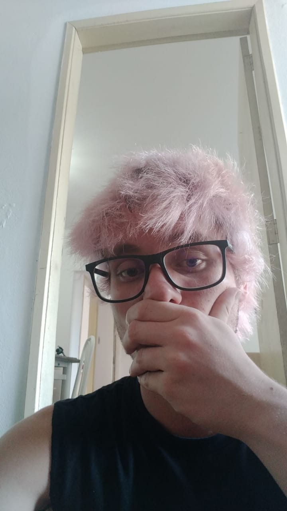
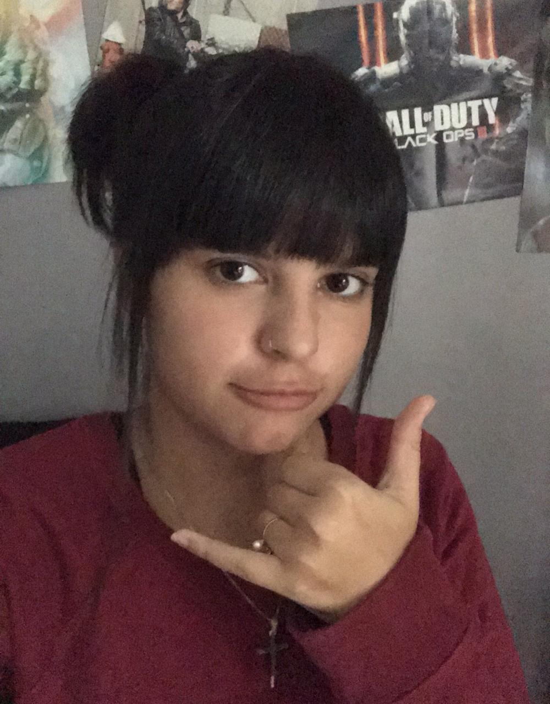
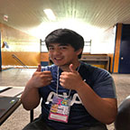
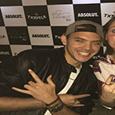

Bruno L. Carli
Bruno é Engenheiro de Software, ama python e video games. Seus hobbyes favoritos são: Programação e jogar video games. Paixões: Star Wars, Final Fantasy, Heavy Metal e uma cerveja bem gelada.
Matheus W. Siqueira (Frodo)
Matheus é estudante de ciência da computação, ama jogar videogames e programação. Seus hobbyes favoritos são: Escutar música e jogar videogame. Paixões: Cerveja.
Beatriz Marinoni L. de Castro
Bia é estudante de design, ama desenhar e video games. Seus hobbyes favoritos são: jogar video games e comer. Paixões: Cerveja, Jogos e comer mais.
Osmar A. Bassi
Osmar é Cientista da Computação, ama futebol e video games. Seus hobbyes favoritos são: Assistir filmes, jogar video games e jogar futebol Paixões: SAO e comida
Ricardo N. Tanji
Ricardo é Cientista da Computação , ama animais e video games. Seus hobbyes favoritos são: Programação, futebol, jogar video games e séries. Paixões: Thresh, Bia, Tottenham , computadores e animais.
Gustavo F. Raposo
Gustavo é estudante de Ciência da Computação, ama pão com bolinho Seus hobbyes favoritos são: Jogar video games, e falar sobre panteros. Paixões: Paçoca.
Enzo M. Paganini
Enzo é Cientista da Computação, ama basquete e video games. Seus hobbyes favoritos são: Jogar basquete, assistir filmes e jogar video games. Paixões: Comida e Rock.
Giovanna A. Roth
Giovanna é academica de direito, ama estar com os amigos e escrever. Seus hobbies favoritos são: correr e ler. Paixões: Assistir filmes em geral, Ouvir música e Dormir.